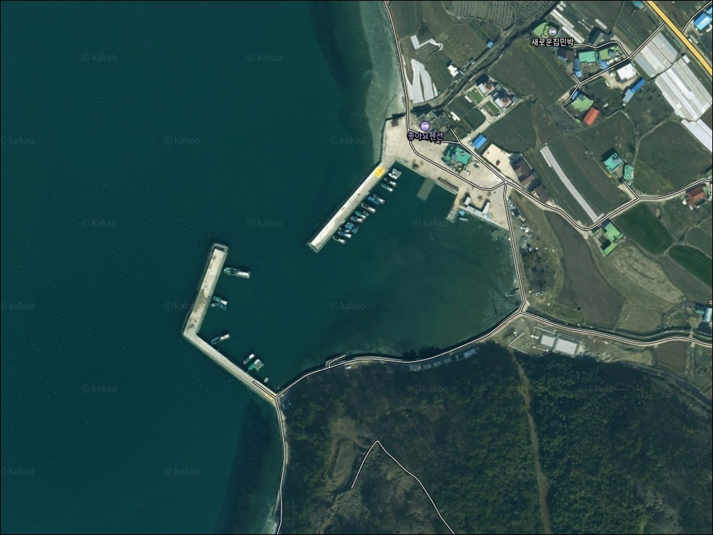
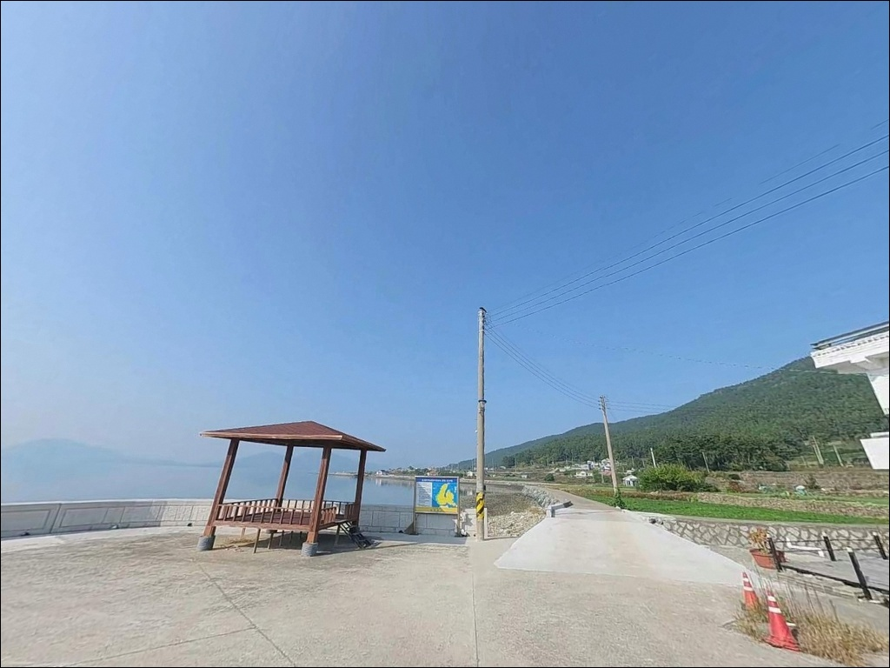
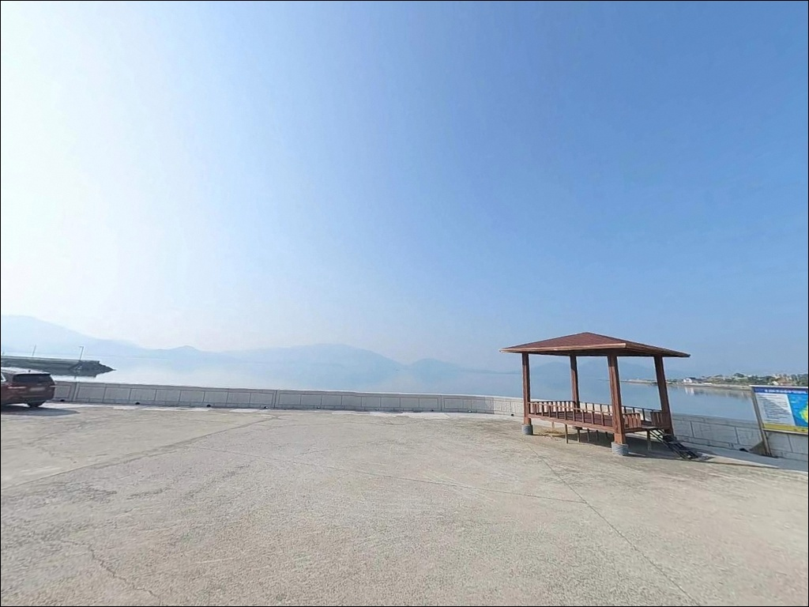
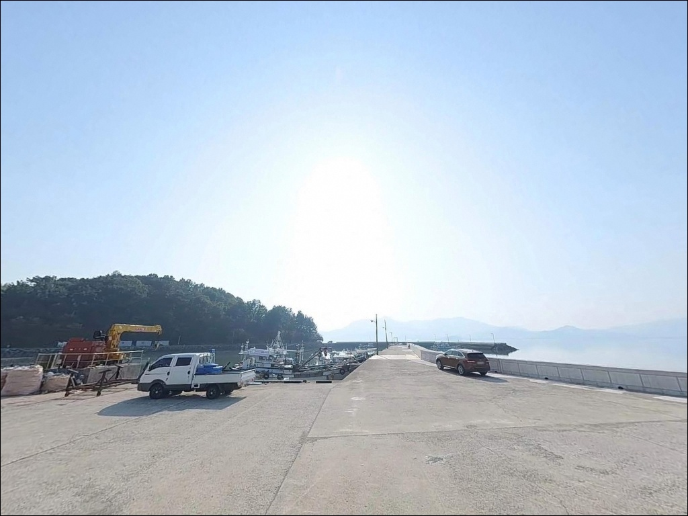
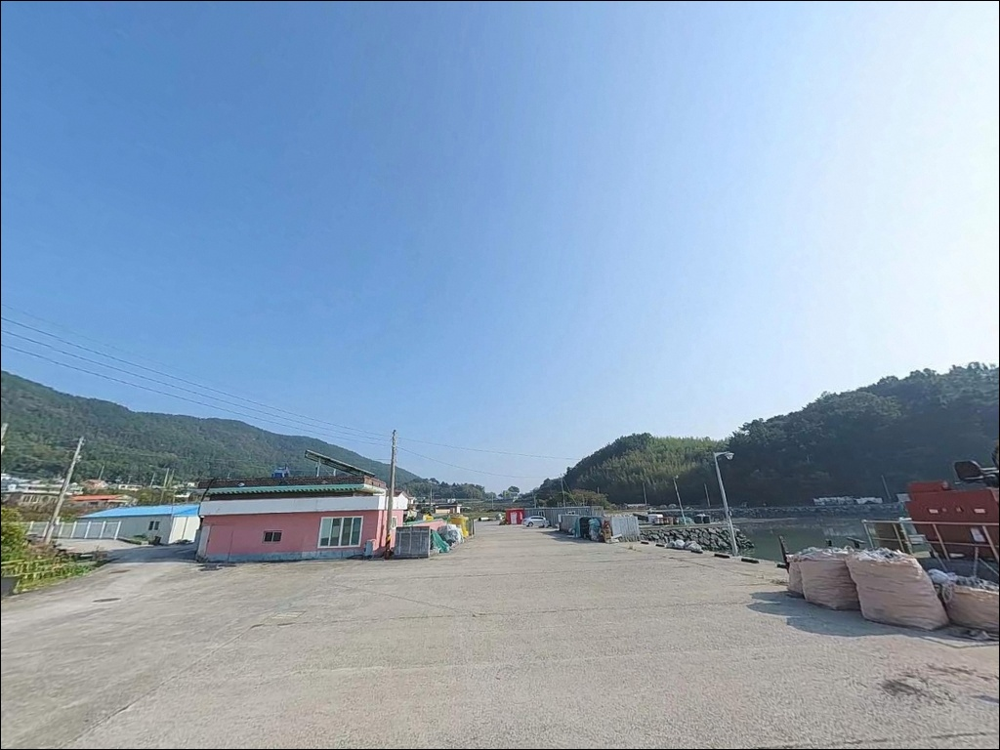
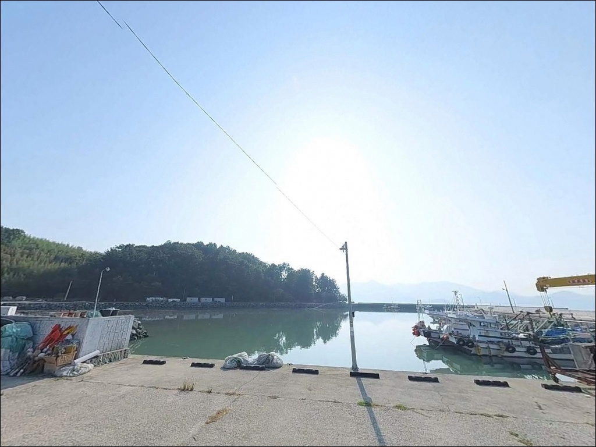
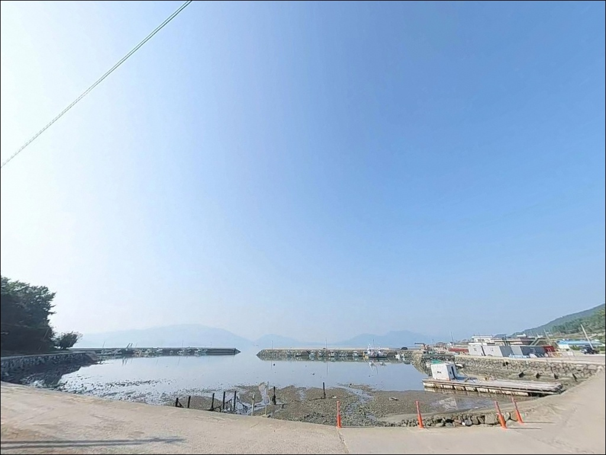
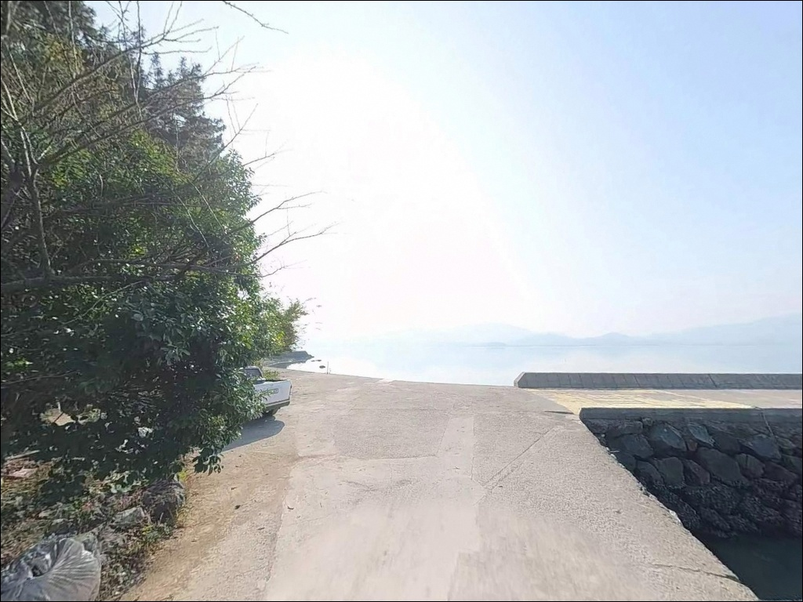
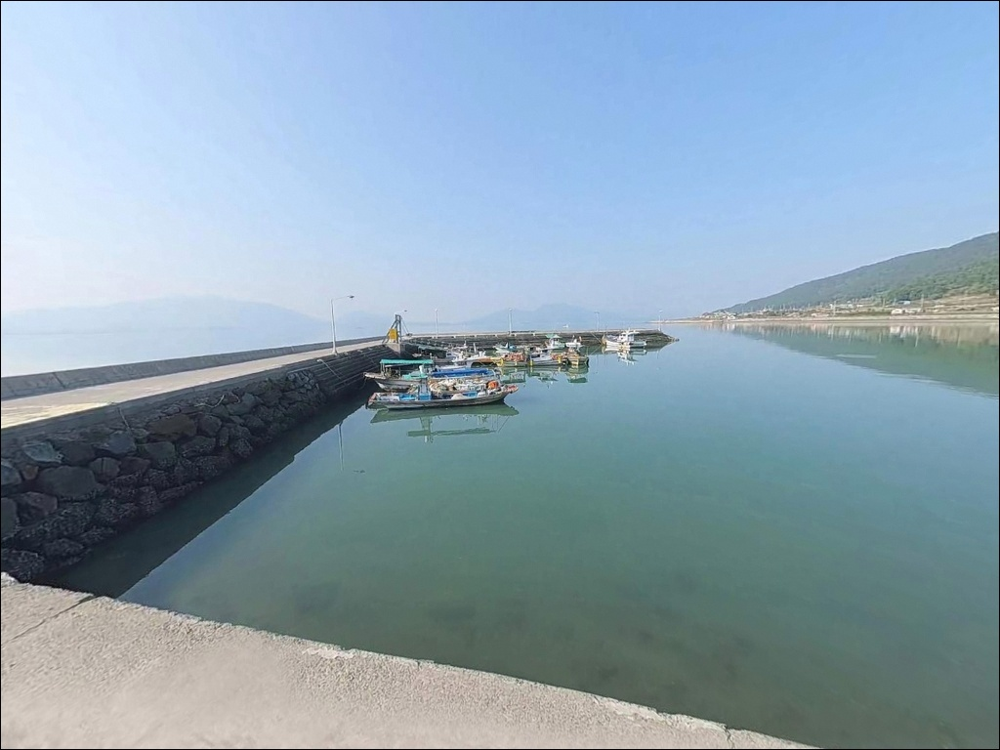

이 페이지에는 광고(제휴 링크 포함)가 있으며, 광고 링크를 통해 구매하면 운영자가 판매 수익 또는 수수료를 받을 수 있습니다. 포인트 사진: 카카오맵 스카이뷰·로드뷰. 이 페이지의 지도·사진 이미지는 카카오맵의 실제 서비스 이미지와 다를 수 있습니다.

신흥항
경남 남해군 창선면 지족리 844-2
지족해협은 남해도와 창선도 사이를 좁게 가르는 수로로,
낙조류 기준 최고 2.3노트의 빠른 조류가 형성됩니다.
신흥항은 그 해협을 정면으로 바라보는 구조여서
물때 계산 없이 진입하면
채비가 흐름에 쓸려 제자리를 찾기 어렵습니다.
이 글은 신흥항의 지형 구조와 진입 여건,
낚시 방식별 공략 조건,
차박 체류 환경을 중심으로 정리합니다.
조황 단정이나 특정 어종 보장은
이 글의 범위에 포함되지 않습니다.

신흥항은 창선삼천포대교를 건너
창선도 내부 해안도로(흥선로)를 타고
지족리 방면으로 이동하면 접근할 수 있습니다.
주소지 844-2 기준으로 해안 접속 도로가 분기하며,
1차선 수준의 농어촌 해안도로가
선착장까지 이어집니다.
진입로는 포장도로로 연결되어 있으며
급경사 구간 없이 안정적인 접근 구조입니다.
승용차 기준으로 진입에 큰 어려움은 없으나,
대형 SUV나 캠핑카를 이용한다면
출발 전 위성지도로 진입로 폭을 미리
확인하고 가는 것이 안전합니다.
항 내부 물량장 전면과 선착장 진입부 공터에
소형 차량 기준 2~3대 규모의 주차 공간이
확보되어 있습니다.
어선 이동 동선을 막지 않는 위치에
차를 세우는 것이 기본 매너입니다.

신흥마을은 49가구 규모의 소규모 어촌으로,
야간 차량 통행이 많지 않고
민가 밀집도도 낮은 편입니다.
물량장 인근 공터는 넓어
차박 기반 체류가 가능한 구조이며,
낚시 공간과 거리가 가까워 이동 동선이 짧습니다.
선착장 주변에 가로등이 설치되어 있어
완전한 어둠 환경은 아닙니다.
야간 낚시 시 기본 시야는 확보되는 편이나,
호안과 선착장 끝단 구간은
발 아래 조심이 필요하므로
개인 헤드랜턴은 반드시 지참해야 합니다.
지족해협과 인접한 위치 특성상
바람이 강한 날에는 체감 바람 세기가
올라가는 경향이 있습니다.
출발 전 기상청 해상 예보를 확인하고,
기상 급변 시에는 즉시 철수하는 것이
기본 안전 수칙입니다.

신흥항에서 가장 가까운 낚시 용품점은
지족리 294번지에 위치한
갈매기낚시편의점입니다.
낚시 소품과 미끼를 현지에서 보충할 수 있어
출조 준비에 도움이 됩니다.
편의점은 반경 3km 이내에
GS25 남해창선점이 위치해 있으며,
주유는 창선면 내 동남해주유소를
이용하는 동선이 일반적입니다.
식사는 지족리 소재지 일대 식당가를
차량 5분 거리에서 이용할 수 있습니다.
삼천포항 수산시장은 약 10km 거리로,
신선한 수산물 구매나 식사가 필요할 때
활용할 수 있는 동선입니다.
신흥항 자체는 소형 어항 구조이므로
완전 자급 체제로 출조 준비를 마치고
이동하는 편이 안전합니다.

신흥항 방문 전 가장 먼저 확인할 것은
물때입니다.
지족해협은 낙조류 기준 최고 2.3노트로
남해 내만권 중 조류 소통이 활발한 해역입니다.
초들물~중날물 구간이
선착장 발판 확보와 채비 운용 모두에
유리한 타이밍으로 알려져 있습니다.
바다타임에서 창선면 기준 물때를 확인하고,
간조 시에는 선창 접안부가
상당히 얕아지는 구조임을
미리 파악해 두어야 합니다.
만조 전후 1~2시간이
선창 발판 확보에 가장 유리한 시간대입니다.
내항 저질이 펄과 조개껍질 혼합으로
채비 밑걸림은 적은 편이지만,
호안과 선착장 끝단 구간은
조류가 직접 닿아 채비 손실이
생길 수 있으므로
여분 채비는 넉넉하게 준비하는 편이 좋습니다.

신흥항의 구조는 선착장 258m, 물량장 101m,
호안 563m로 이루어진 내항 중심 항구입니다.
내항은 펄·조개껍질 혼합 저질로
수심 0.7~1.3m 수준이며,
간조 시에는 접안부 일부가
드러날 정도로 얕아집니다.
선착장 끝단과 호안 외곽은
지족해협 조류의 영향권에 진입하는 구간입니다.
조류가 흐르는 방향으로 채비를 태우면
농어·볼락 계열의 접근이 기대되는 수로형 구조이며,
낙조류가 창조류보다 강하게 형성되어
낙조 타이밍에 조류 활용 낚시가
더 잘 맞는 지형입니다.
선착장 내항과 외항의 조건이
명확하게 나뉘는 구조라,
내항에서는 바닥층 탐색 중심,
외항 방향에서는 조류를 활용한
중층 흘림 방식을 구분해서 운용하는 것이
이 포인트에 어울리는 접근법입니다.
출조 전에 창선면 일대 최신 조황을
꼭 검색해 보시기 바랍니다.

이 포인트에서 가장 기본이 되는 낚시는
원투낚시입니다.
펄·조개껍질 저질 기반으로
밑걸림이 적은 내항과 호안 구간에서
보리멸·노래미·붕장어를 노리기에 적합합니다.
청갯지렁이 또는 홍갯지렁이를 기본 미끼로
선착장 외측 방향으로 멀리 던지는 방식이 어울립니다.
릴찌낚시(전유동)는 지족해협 조류를
가장 잘 활용할 수 있는 방식입니다.
해협 본류 방향으로 채비를 자연스럽게 흘리면
농어와 볼락 계열의 입질을
기대해 볼 수 있는 구조입니다.
초들물~중날물 구간에
조류 흐름이 가장 안정적으로 형성됩니다.
야간에는 선착장 주변 조명 구간에서
소형 지그헤드나 미노우를 이용한
루어낚시가 효과적입니다.
볼락·농어를 대상으로
조명이 비추는 경계선 부근을 중심으로
천천히 탐색하는 방식이 이 포인트에 맞습니다.

신흥항 조류가 너무 강하거나
주차 여건이 여의치 않을 때는
같은 창선도 서안 해안선의
수장포방파제가 첫 번째 대안입니다.
신흥항에서 약 2.4km 거리에 위치하며
동일한 지족해협 해역 특성을 공유합니다.
광천리 방파제도 신흥항에서
약 2.4km 거리에 위치하는
창선도 서안의 대안 포인트입니다.
같은 해협 환경으로 조류 패턴이 유사하며,
조류 강도가 부담스러운 날에는
두 포인트를 묶어 이동하는 동선이
이 권역에서 효율적인 방법입니다.
차박 여건이 더 넓게 필요하다면
삼동면 방향의 물건항을 대안으로
고려해 볼 수 있습니다.
대형 방파제와 공영주차장이 갖춰진 포인트로,
신흥항보다 주차 공간이
넉넉한 환경입니다.

지족해협 조류를 제대로 활용하고 싶은
낚시인이라면 신흥항 지형 구조는
잘 맞는 환경입니다.
원투낚시부터 릴찌낚시, 야간 루어까지
복수 방식으로 운용할 수 있는 구조이고,
창선도 서안에서 알려진 포인트가
많지 않아 상대적으로 조용하게
자리를 잡을 수 있는 편입니다.
반면 물때 계산 없이 진입하거나
간조 타이밍에 맞추면
선창 수심이 극단적으로 얕아져
낚시 자체가 어려워지는 구조입니다.
물때 확인, 채비 여분 준비, 진입로 사전 파악
이 세 가지가 갖춰지면
기억에 남는 포인트가 될 수 있습니다.
물량장 공터에서 차를 세우고
지족해협 너머로 조류 흐름을 바라보며
하룻밤 머무는 차박 낚시 여정이라면,
신흥항은 조용하고 기분 좋게
쉬어가기에 충분한 포인트입니다.